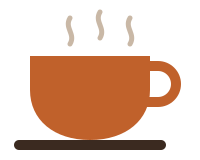

Grãos selecionados, torra fresca toda semana e entrega em casa.
Quero experimentar
Intenso e encorpado, extraÃdo na hora.
R$ 7,00Cremoso, com canela e cacau.
R$ 12,00Método V60, notas de chocolate e caramelo.
R$ 9,00Receba 500g por mês. Promoção: primeiro mês com 30% de desconto.
Explicação: o seletor de moagem acima serve para escolher como o café será moído antes do envio. Se você tem moedor em casa escolha grãos inteiros, pois o café dura mais. Se usa máquina de espresso escolha fina, se usa coador escolha média e se usa prensa francesa escolha grossa. A moagem errada deixa o café amargo ou aguado.
A pausa automática serve para pausar a assinatura quando você não abre o e-mail de confirmação por 2 meses seguidos, assim você não recebe café que não vai usar.